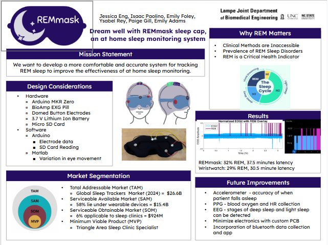
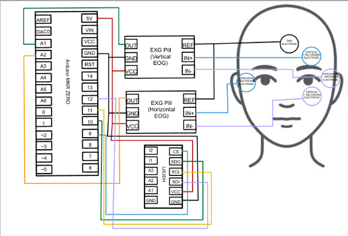

Project Overview
Traditional sleep clinics can be difficult to access for individuals and often fail to capture real-world sleep behavior. While at-home solutions exist to address these limitations, most rely on distal recordings and indirect calculations to estimate polysomnography (PSG) data, which can reduce accuracy. This project focused on reliably measuring Rapid Eye Movement (REM) sleep, a critical biomarker associated with memory, emotional regulation, and psychiatric disorders.
Our device successfully detected REM sleep time, latency, and patterns, with results consistent with a commercial smartwatch when using a 30-second REM epoch threshold. Future improvements include optimizing accelerometer data collection, integrating PPG and EEG, and adding Bluetooth data collection. Our project was selected for presentation at the R!OT Innovation Lab Student Showcase at NC State, where it was presented to a multidisciplinary audience of engineers, business faculty, and industry professionals.
My Role
- Acted as the primary point of communication for the team, coordinating task assignments and overseeing final testing and deliverables
- Led the physical design of the wearable sleep cap:
- Determined component placement and electrode positioning
- Identified required hardware components
- Created initial design sketches and layout concepts
- Designed and prototyped the circuit schematic, integrating Arduino MKR Zero, EXG Pill, and LIS3DH accelerometer
- Developed the embedded software in Arduino (C++):
- Implemented data acquisition from EOG electrodes and accelerometer
- Saved data to an SD card for MATLAB-based post-processing and analysis
Tools Used

